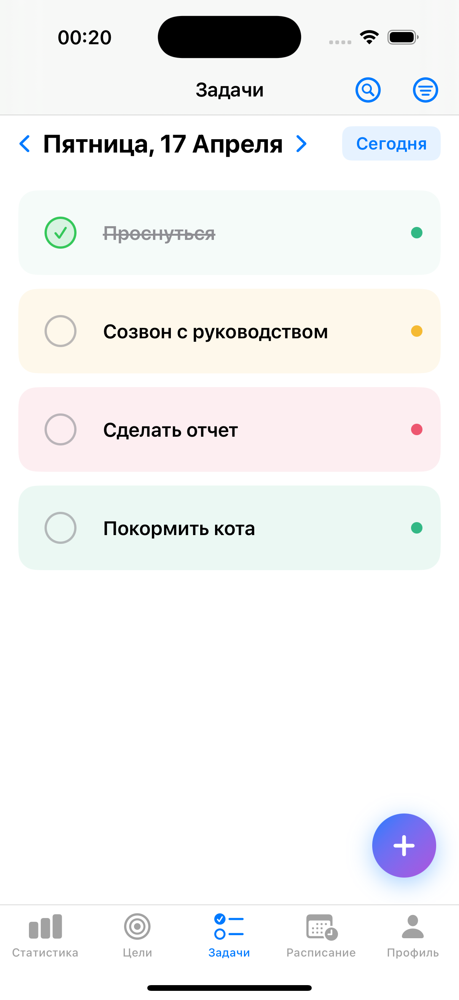
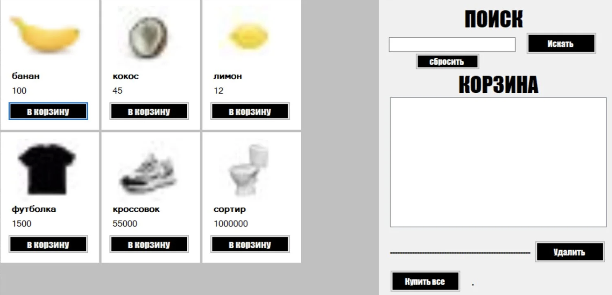
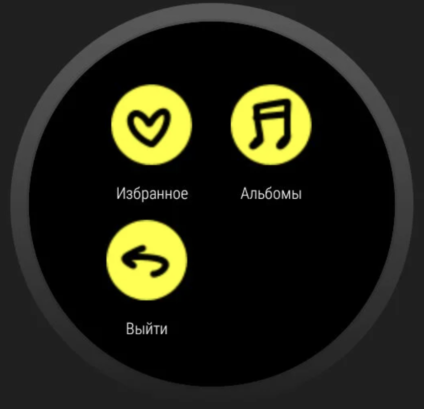
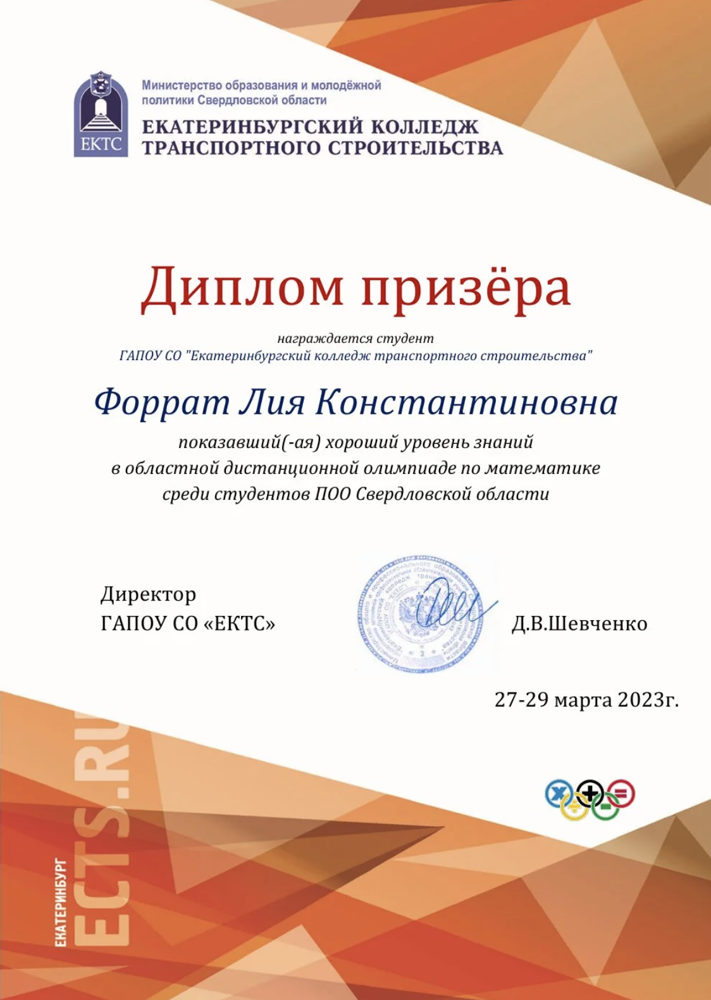
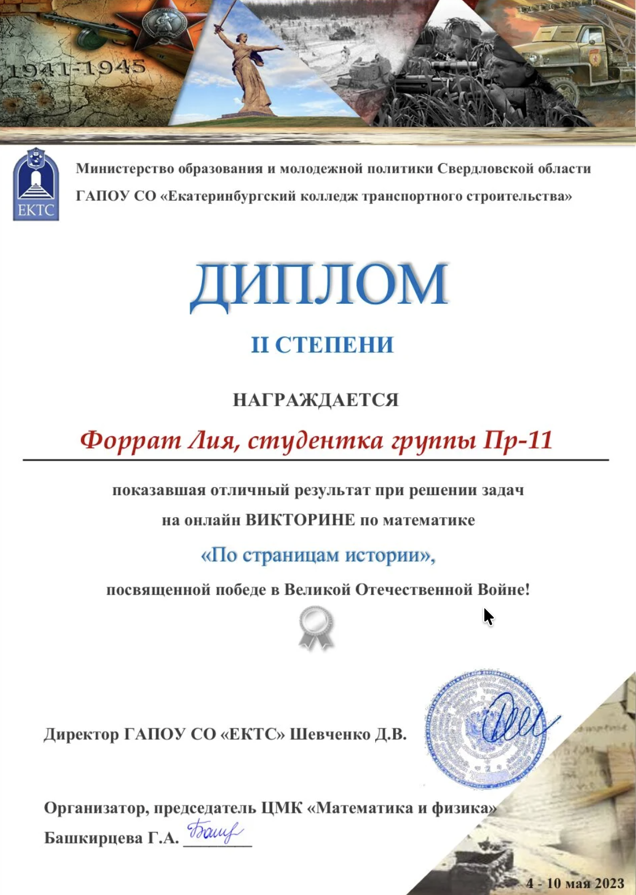
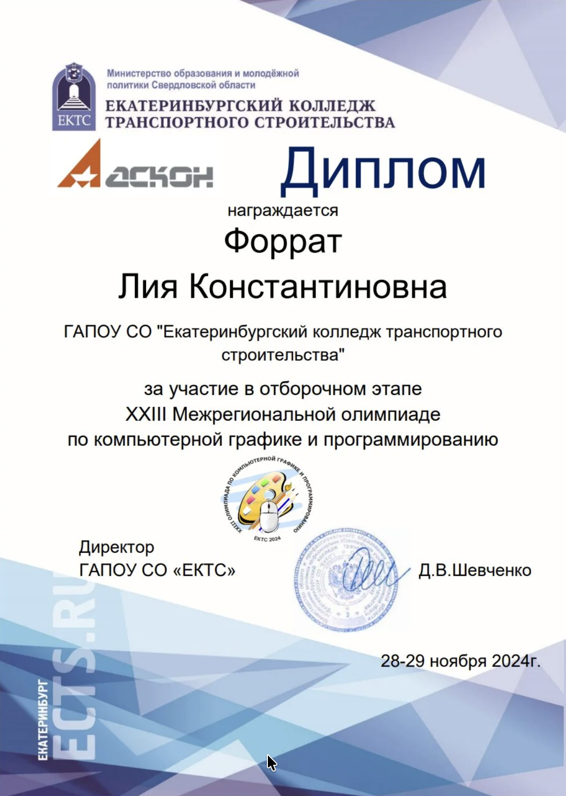
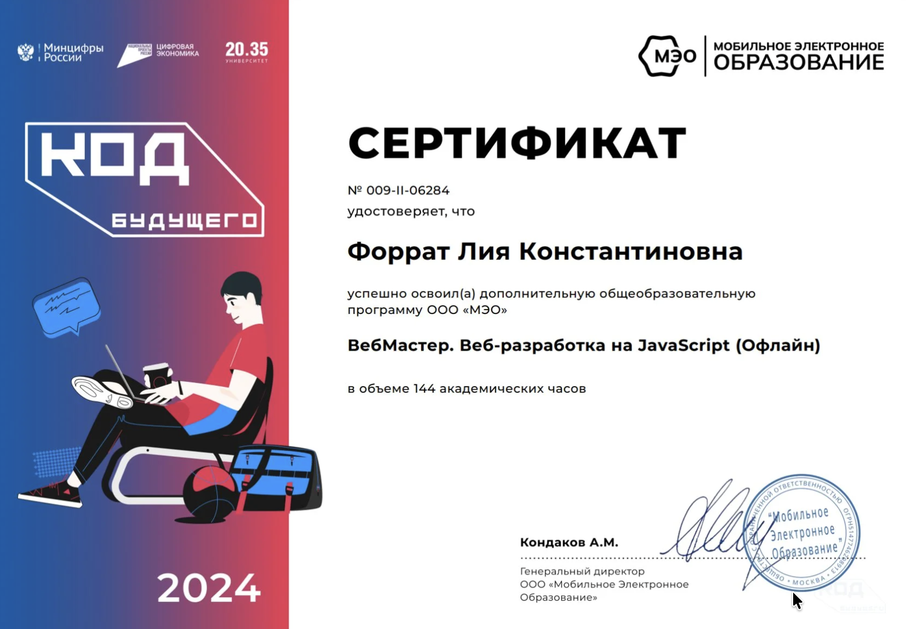

Знания
- Основные этапы разработки ПО
- Системы управления базами данных
- Системы контроля версий Git
- Оформление документации на программные продукты
- Основные принципы технологии структурного и объектно-ориентированного программирования
Министерство образования и молодежной политики Свердловской области Портфолио студента ГАПОУ СО «ЕКТС» специальность 09.02.07 "Информационные системы и программирование"

iOS-приложение для планирования личных дел и долгосрочных целей.
Ссылка на работу
Минималистичный маркетплейс, в котором доступна роль покупателя и продавца.
Ссылка на работу
Позволяет добавлять понравившиеся музыкальные альбомы в избранное.
Ссылка на работу


